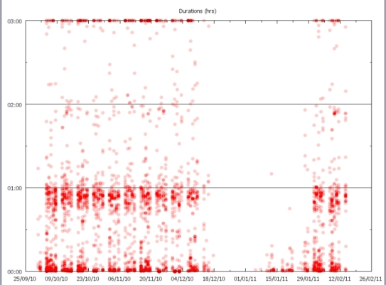
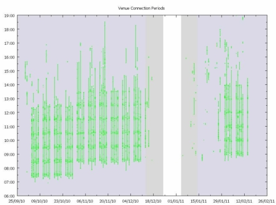
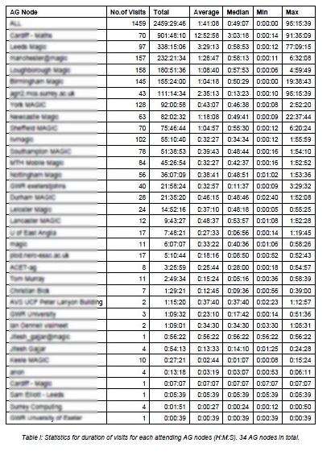
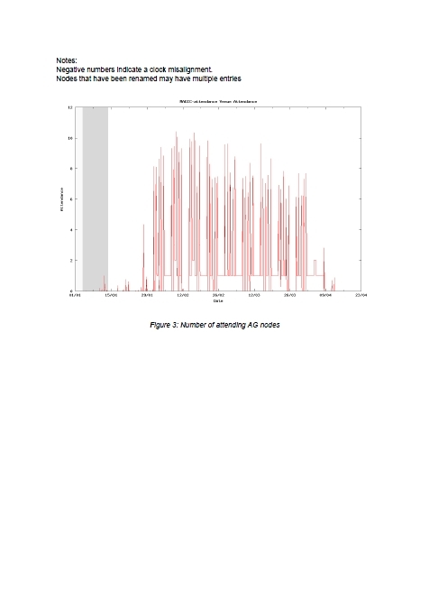

Producing PDF Reports Programmatically
Originators/Authors
James S Perrin
AGtivity, University of Manchester
Purpose
To automatically produce a report for end users in charge of a physical Access Grid Node or a
Virtual Venue, showing usage statistics and patterns by combining images and data in PDF
document. A complete report based on usage data should be produced without manual
intervention.
Background
Programs and scripts had been developed that would parse the usage logs from the Access Grid
servers and generate graphs from the processed and filtered output. This works fine for the AG
support staff, but there was a need to combine the data, graphs and other information into a report
for the end- user so they could make their own decisions from how their node or venue was being
utilised. The scripts can be run automatically for all nodes (> 400) and virtual venues (>50) as
manual compilation of these reports would be laborious.
We describe the basic elements needed to produce a PDF document using Python. There are
PDF libraries for other scripting languages such as PERL but Python was chosen as it considered
easier to learn and understand.
Ingredients
- Python
- Reportlab Toolkit (PDF module)
- Python Image Library (to load
-
Data sources e.g.
- Graphing software (GNUplot)
- Log file and log parser (C++ executable in this case)
Assumptions
Some programming knowledge. Python specific knowledge is a bonus, however this was my first
Python project.
Method
Install Python, Reportlab Toolkit and Python Image Library. Write a Python script that can call
your log parser, generate graphs and then combine the results into a PDF.
Run the Python script with the name of the node (or venue) of interest. Optionally filter for a range
of dates. Email the PDF to the end user.
Individual Steps
Installation
If not already available install Python
http://www.python.org
Install the following modules (check the versions are compatible with the version of Python
installed e.g.
2.7)
- Reportlab ToolKit http://www.reportlab.com/software/opensource/rl- toolkit/
- Python Image Library http://www.pythonware.com/products/pil/
Reading Script Arguments
We need to import the sys module so we can reading values passed to the script
# add this at the top of the script
import sys
# get the venue the report will be produced for
venue = sys.argv[1]
Executing External Commands
If you want to run external commands such as your log parser or graphing tool you need the
following
code:
# add this at the top of the script
import os
# then you can execute a command like this
os.system(‘mylogparser –option foo.log > bar.csv’)
Reading CSV Files
Python has support for reading CVS files as a core module:
# add this at the top of the script
import cvs
# open a file
csvfile = open(venue+‘.csv', 'rb')
reader = csv.reader(csvfile)
# read in rows
total = 0
for row in reader:
# skip header
if(reader.line_num > 1):
total += float(row[2]) # sum the 3 rd column
Setting up a PDF
There is very little to set up, it is just a matter of importing all the right modules. The following
allows a
PDF with text, images and tables to be created:
from reportlab.lib.styles import getSampleStyleSheet
from reportlab.lib.pagesizes import A4
from reportlab.lib.units import inch
from reportlab.platypus import SimpleDocTemplate, Paragraph, Image,
Spacer, PageBreak, Table, TableStyle
Some different text style would be nice. We can grab these from SampleStyleSheet that Reportlab
provides. We can use these as is or modify them:
styles = getSampleStyleSheet()
styleNormal = styles['Normal']
styleHeading = styles['Heading1']
styleHeading.alignment = 1 # centre text (TA_CENTRE)
Creating a PDF ‘Story’
Reportlab has a few different ways to construct a PDF, the easiest is to create a story. This is
simply a list
of objects that will be rendered into a PDF:
story = []
# Text is added using the Paragraph class
story.append(Paragraph(‘AGtivity Report’, styleHeading))
story.append(Paragraph(‘This report describes the usage of the AG venue
’+venue, styleNormal))
# Images just need a filename and dimensions it should be printed at
story.append(Image(‘graph-‘+venue+’.png’, 6*inch, 4*inch))
# Spacers and pagebreaks help with presentation e.g.
story.append(Spacer(inch, .25*inch))
…
story.append(PageBreak())
# Data can be best presented in a table. A list of lists needs to
declared first
tableData = [ [‘Value 1’, ‘Value 2’, ‘Sum’],
[34, 78, 112],
[67,56, 123]
[75,23, 98]]
story.append(Table(tableData))
Tables have their own TableStyle class which can set fonts, alignment and boxes. The Reportlab
documentation covers this in detail.
Creating the PDF File
The SimpleDocTemplate class takes care of most of the work for a straight forward document.
doc = SimpleDocTemplate(‘report.pdf', pagesize = A4, title = "Access
Grid Venue Usage Report “+venue, author = "AGSC")
doc.build(story)
Output Data
A PDF report is produced with graphs of meeting durations and timetable. For venues, occupancy
is also
plotted. A table of statistics for venues attended by the node, or nodes attending the venue is
generated, as well as supporting data on average, minimum/maximum meeting durations.




Example Report for ‘MAGIC’ virtual venue